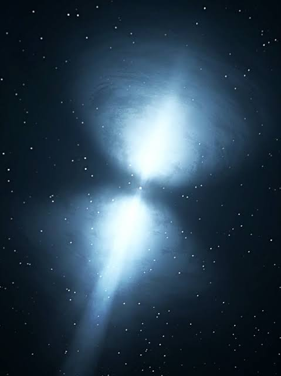

Os mistérios dos objetos mais fascinantes do universo.
Um pulsar é uma estrela de nêutrons em rotação rápida e com um forte campo magnético.
Ela emita feixes de radiação eletromagnética pelos seus polos. Vistos da Terra como pulsos regulares
Como Funcionam
Estrela de Prêons/Nêutrons: É o corpo celeste remanescente e ultraescrevido que sobra após a explosão de uma estrela massiva.
Campo Magnético Gigante: É a força magnética extrema gerada pelo pulsar, bilhões de vezes mais forte que a da Terra.
Eixo de Rotação: É a linha imaginária em torno da qual o pulsar gira em alta velocidade, completando centas de voltas por segundo.
Eixo Magnético: É a linha por onde o magnetismo se alinha, que fica desalinhada em relação ao eixo de rotação
Feixes de Radiação: São jatos contínuos de luz e raios X que escapam exclusivamente pelos polos magnéticos da estrela.
Efeito Farol: É o fenômeno percebido na Terra quando os feixes de radiação apontam na nossa direção a cada rotação, gerando o pulso brilhante.
Desaceleração Gradual: É a perda lenta de velocidade de rotação ao longo de milhões de anos devido à energia perdida no espaço.

Tipos de Pulsares
Pulsares potencializados por rotação: A perda de energia da rotação da estrela fornece o poder para emitir os feixes de radiação.
Pulsares de rádio: São os mais comuns; emitem feixes regulares de ondas de rádio a partir dos polos magnéticos conforme giram.
Pulsares de milissegundos: Giram em velocidades extremamente rápidas
(às vezes centenas de vezes por segundo). Acredita-se que tenham ganhado essa velocidade "reciclando" matéria de uma estrela companheira em um sistema binário.
Pulsares “aranha”: Um grupo exótico de pulsares de milissegundos que desgastam ou consomem uma estrela companheira próxima;
dividem-se em subtipos como "Black Widows" (viúvas-negras) e "Redbacks".
Pulsares potencializados por acreção (ou de raios-X): Estão em sistemas binários onde a estrela de nêutrons puxa a matéria de uma companheira;
essa matéria cai sobre a estrela, aquece e emite raios-X.
Magnetares: Estrelas de nêutrons com campos magnéticos extremamente fortes (trilhões de vezes maiores que o da Terra),
nos quais o decaimento desse campo magnético gera a energia eletromagnética.
Pulsares sub-anãs quentes: Um tipo especial e menos comum descoberto recentemente por cientistas, associado a estrelas que mudam de tamanho de forma pulsante.